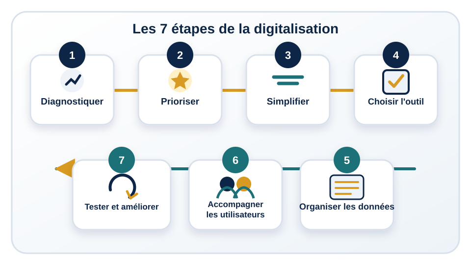

Objectif de la leçon
À la fin de cette leçon, vous pourrez organiser un projet de digitalisation en sept étapes, choisir un premier processus réaliste, préparer les données et accompagner les utilisateurs avant d'étendre la solution.
Une digitalisation maîtrisée part du besoin réel, avance par étapes et s'améliore grâce aux résultats observés.
À la fin de cette leçon, vous pourrez organiser un projet de digitalisation en sept étapes, choisir un premier processus réaliste, préparer les données et accompagner les utilisateurs avant d'étendre la solution.
Commencez par décrire le processus tel qu'il fonctionne réellement : déclencheur, acteurs, étapes, validations, données utilisées, délais et difficultés. Repérez les demandes perdues, les doubles saisies, les fichiers personnels et les moments où la responsabilité devient floue.
Le diagnostic doit faire apparaître les éléments utiles à conserver autant que les problèmes à corriger. Une organisation peut déjà posséder des pratiques efficaces qu'il serait inutile de remplacer.
Un bon premier processus réunit plusieurs critères :
Avant de mettre la procédure en ligne, supprimez les étapes sans valeur ajoutée. Vérifiez si toutes les validations sont nécessaires, si certaines informations sont demandées deux fois et si une décision simple peut être prise plus tôt. Digitaliser une procédure inutilement complexe ne fait que déplacer sa complexité vers un écran.
L'outil doit répondre au processus simplifié, au volume de demandes, aux capacités des utilisateurs et aux exigences de sécurité. Une solution simple et bien utilisée vaut mieux qu'un système étendu dont les fonctions restent incomprises.
Évaluez notamment la facilité de saisie, le suivi des statuts, les droits d'accès, les possibilités de rapport, la maintenance et la compatibilité avec les outils déjà utilisés.
Une digitalisation produit des données ; sans règles, elle peut produire une nouvelle forme de désordre. Définissez le propriétaire de chaque ensemble de données, les personnes autorisées à consulter ou modifier les informations et la durée de conservation utile.
L'adoption ne se résume pas à présenter un outil. Les utilisateurs doivent comprendre le problème traité, leur rôle, les instructions pratiques et la manière de signaler une difficulté. Des exemples courts, une période d'accompagnement et un point de contact facilitent la transition.
Les retours des utilisateurs sont également une source d'amélioration. Une résistance peut révéler une consigne ambiguë, une étape trop longue ou une fonction mal adaptée au travail réel.
Lancez d'abord la solution sur un service, un type de demande ou une période limitée. Mesurez le délai, les erreurs, les demandes en attente et la facilité d'utilisation. Corrigez les problèmes avant d'étendre le dispositif.

Une organisation reçoit les demandes de maintenance par téléphone, messages et notes papier. Certaines interventions sont oubliées, deux techniciens peuvent traiter la même demande et les urgences ne sont pas distinguées des problèmes mineurs.
L'équipe commence par cartographier le processus : qui signale le problème, qui évalue l'urgence, qui intervient et qui confirme la résolution. Elle choisit ce processus parce qu'il est fréquent, qu'il affecte directement le fonctionnement et que les données sont simples.
Après simplification, un formulaire unifié recueille le lieu, le type de panne, une description et le niveau de priorité. Chaque demande reçoit un numéro de suivi, un responsable, un statut et une échéance. Les droits d'accès permettent aux demandeurs de consulter le suivi sans exposer les informations techniques sensibles.
Un service pilote utilise le dispositif pendant un mois. L'organisation mesure le délai de première réponse, le temps de résolution et les demandes rouvertes. Les utilisateurs signalent les champs peu clairs ; le formulaire est ajusté avant l'extension aux autres sites.
Choisissez un processus candidat. Évaluez sa fréquence, ses retards, ses erreurs, son impact, sa faisabilité et la disponibilité des données. Définissez ensuite un périmètre pilote, un responsable et deux indicateurs de résultat.
Réponse : une fréquence élevée, des retards ou erreurs visibles, un impact concret, un périmètre faisable et des données disponibles.
Réponse : pour assurer leur qualité, définir leur propriétaire, contrôler les accès et protéger les informations sensibles.
Réponse : il permet de tester l'usage réel, mesurer les résultats, recueillir les retours et corriger la solution avant son extension.